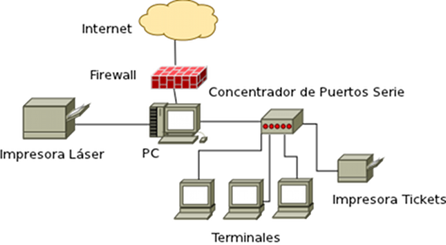
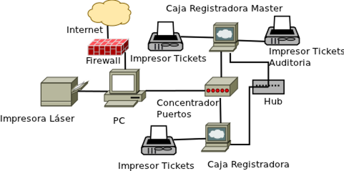
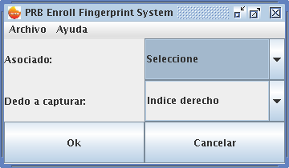
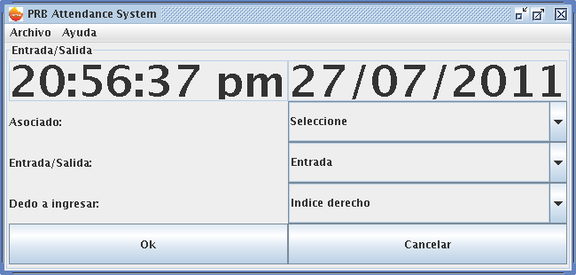
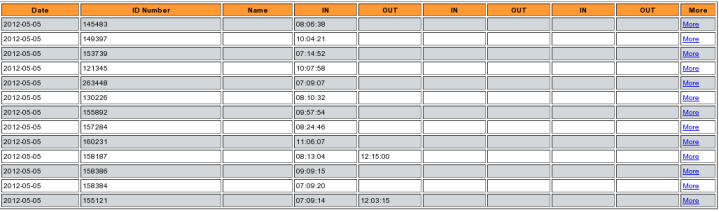
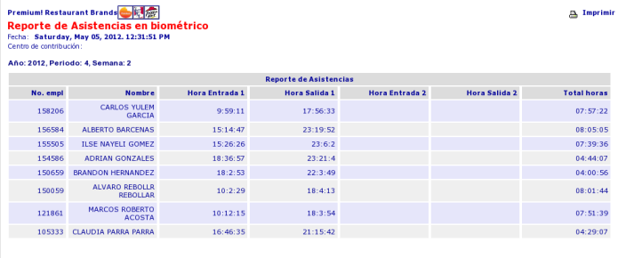

-
Agenda
- Introducción
- Objetivos
- Descripción del sistema en restaurante
- Algunos proyectos desarrollados
- Proyecto de control de asistencia
- Resultados
Introducción
- Premium Restaurant Brands (PRB) es la compañía que maneja las marcas de KFC y Pizza Hut en México.
- Cuenta con más de 300 restaurantes en México.
- En cada uno cuenta con una computadora con sistema operativo GNU/Linux.
Objetivos
Desarrollo e implementación de reportes y aplicaciones que ayuden a:
- Eficientar procesos.
- Conocer resultados.
- Ahorrar tiempo.
- Identificar áreas de oportunidad.
- Mejoras en el punto de venta.
Descripción del sistema en restaurante
Cada restaurante cuenta con una computadora para:
- Registro y procesamiento de la venta.
- Generación de reportes.
- Manejo de periféricos como impresoras de tickets, cajas registradoras, terminales, etc..
- Actividades gerenciales (correo electrónico, ingreso a intranet, procesador de textos, etc.).
El software que cuenta la computadora de restaurante es:
- Sistema operativo GNU/Linux
- Servidor HTTP Apache y Tomcat
- PostgreSQL
- Mozilla Firefox y Thunderbird
- OpenOffice.org
- Sistema punto de venta SUS/FMS (propietario).
SUS/FMS tienen las siguientes funciones:
- Toma de ordenes.
- Control de efectivo.
- Funciones administrativas.
- Inventarios.
- Control de asistencia.
- Mantenimiento de tablas del sistema.
- Reportes.
Diagrama del sistema en restaurantes de Pizza Hut
-

Diagrama del sistema en restaurantes de KFC
-

Algunos proyectos desarrollados
Auditoría electrónica
- KFC
- Llevar un registro de los tickets marcados en cada caja.
- Iniciativa "paperless".
- Detección de posibles fraudes por parte de los asociados.
- Revisión en tiempo real de los tickets de auditoría generados.
#336 COME
1 MBBIG C 72.00
1 +PUR/RE 7.00
1 NINGUNO .01
1 MANZANA
TOTL 79.00
EFVO 100.00
CAMB 21.00
NACHO
8378 11:20 #12 MAR.01'12 REG0003
Reporte de Estimado de usos ideales en KFC
- Cantidad de producto que el restaurante tuvo que haber usado, de acuerdo a su número de transacciones y a la cantidad de producto establecida por la receta, sin incluir la merma.
- El gerente realizaba la búsqueda manual del uso ideal.
- Se automatiza el proceso.
- Se tienen archivos de configuración de productos de acuerdo a la línea de producción.
Proyecto de control de asistencia
- Uso de huella digital para registrar entrada y salida.
- Evitar uso de contraseñas.
- Eliminar la suplantación.
- Eliminar las modificaciones a las horas por parte del gerente.
- Interfaz gráfica realizada en Java Swing.
- Uso de Java Native Interface (JNI) para el uso de libfprint.
- Pantalla de enrolamiento y entrada/salida de asociados.
|  |
|  |
- Lectura automatizada mediante cURL y Perl.
- Ingreso de registros a archivos de nómina de punto de venta.
- Almacenamiento de registros en base de datos (PostgreSQL).
- Reporte para la consulta de horas en restaurante.
|  |
|  |
Resultados
- Ya no se compra papel para tickets de auditoría.
- Nivel adecuado de inventario gracias al reporte de usos ideales.
- Incorporación de reporte de usos ideales a Pizza Hut.
- Control de retardos, faltas e incapacidades.
- Excepciones de pago.
- Visualización de la asistencia en tiempo real.
- Al día de hoy se encuentra instalado en 6 restaurantes KFC y 20 Pizza Hut
Gracias por su atención.